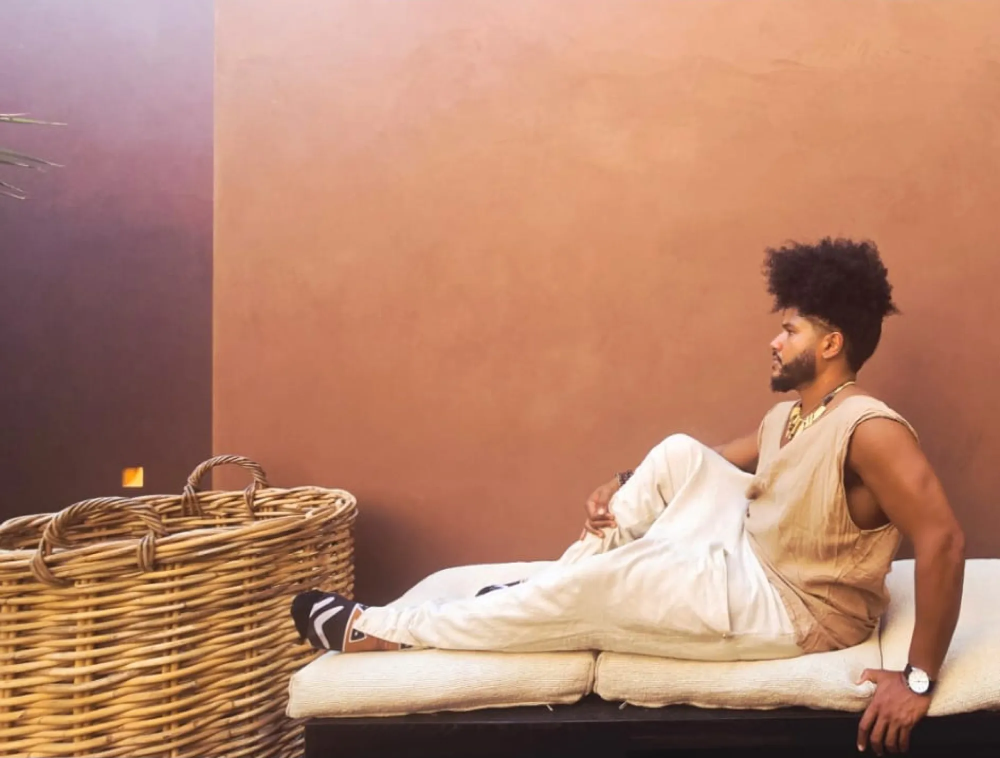
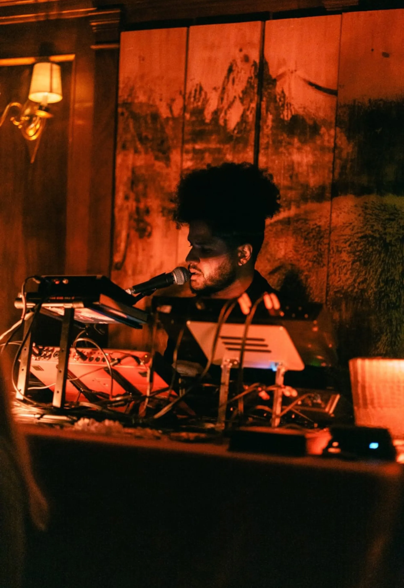

Benjamin's performances are not concerts in the traditional sense. They are ceremonies. Each show is a unique, improvisational journey through rhythm, poetry, and spiritual invocation.
With live afrobeat instrumentation, looped vocals, and spontaneous spoken word, no two performances are ever the same. The audience doesn't just watch—they participate in something ancient being made new.

For the past year, Benjamin has been touring and creating alongside Dreeemy, an artist whose Egyptian heritage and mystical vocal style creates a perfect counterpoint to his Dominican roots.
Together, they've performed across Europe, New York, California, and Mexico City—each show a fusion of cultures, a meeting of ancient traditions, a dialogue between continents carried through music.
Their collaboration is more than musical—it's spiritual. Two diasporic artists finding home in each other's rhythms, creating something neither could make alone.
Follow Dreeemy
Every performance is a prayer. Every rhythm is a remembrance. We don't perform for the audience—we perform with them, for something greater than all of us.